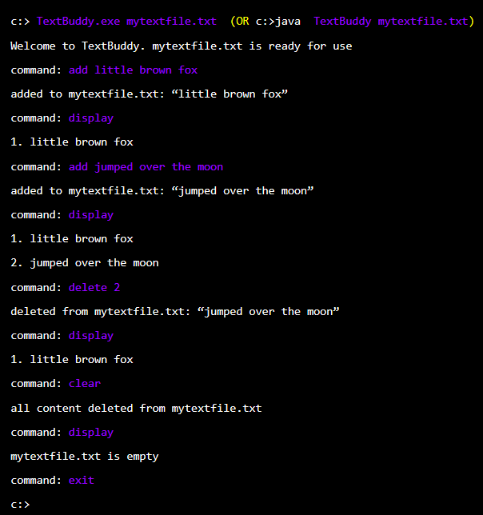

Write a CLI (Command Line Interface) program called TextBuddy using Java/C++ to manipulate text in a file.
Here is a sample interaction with the program. Text in purple are commands entered by the user.

Note that mytextfile.txt is a parameter given when running the program. i.e., The name of the file is not
always mytextfile.txt. [C++ guys: Here’s an article on how to handle command line parameters]
You may make any reasonable assumptions about program behavior not evident from the above sample. State
all your assumptions in the header comment of the TextBuddy main file.
Things to look out for:
-
The file can be saved to the disk (a) after each user operation, (b) periodically e.g., every 5
seconds, (c) when the user exit the program. We are interested to know which option you choose.
Hint: Avoid pre-mature optimizations.
-
We are VERY interested in how human-understandable your code is, and how well it follows the specified
coding standard (Java coding standard, C++ coding standard)
submission:
IMPORTANT: Please follow submission instructions precisely e.g. file format, file name, page header,
cover page content etc. Your submissions are processed -- sometimes by automated scripts, sometimes
manually -- and those processes break if the submission is not in the expected format.
On a related note, we are in a field where small details matter. Train yourself to pay attention to details.
We cannot afford to be sloppy.
You need to submit your work in BOTH these formats.
-
Source format (for accuracy checking)
-
Put testinput.txt, expected.txt files used for testing in the same folder where TextBuddy.class or
TextBuddy.exe is.
C++ users: to reduce file size, you can remove those big *.ipch files created by Visual Studio.
Note: testinput.txt and expected.txt are the files you used for regression testing of your program, using
the technique explained in the Lecture 1 handout about regression testing. For example,
TextBuddy.exe mytestfile.txt output.txt
FC output.txt expected.txt
-
Zip up the entire project folder in zip format (no other archiving formats please). It should also include
source files (.java, .h, .cpp etc.)
-
Name it "["Tutorial group ID"][“Your full name”][CE1][java | cpp]".zip (e.g. [w10][Li
Jien][CE1][java].zip) Use the exact tutorial group ID as specified in our Schedule page (See under
Tutorial Schedule section)
-
Upload to the appropriate IVLE folder.
-
Document format (for code quality checking and giving feedback)
-
Copy paste ALL your code, input.txt, and expected.txt to a single document (use this template) and save in
pdf format.
-
Name it similar to the zip file (e.g. [w10][Li Jien][CE1][cpp].pdf)
-
Submit it to the appropriate IVLE folder.
Notes:
-
If re-uploading an updated version, please delete the previous version first. IVLE does not overwrite the
previous version.
-
All submissions will be published to the class.
evaluation: Correct functionality is expected, but the focus is on code quality.
This code will be graded by one tutor and peer-reviewed by 1-2 classmates.
Points for code:
-
On track (a reasonable submission): 15 points
Bonus points (added to the above):
-
Punctuality bonus (Submitted on time): 1 points {strictly based on the time recorded
by IVLE}
-
Format bonus (Followed exact submission format): 1 points
Penalties (deducted from above)
-
No evidence of effort:
Submissions below what we consider “reasonable quality” will be penalized further based on the quality
level. e.g. No evidence of applying the materials covered in the module. such as applying SLAP, following
the given coding standard etc.
-
Late submissions:
Submissions received more than 24 hours late will be penalized by -2 points per each 24 hours delayed beyond
the first 24 hours.
Total points will be in the range of 0 - 15, most submissions are expected to earn 15.